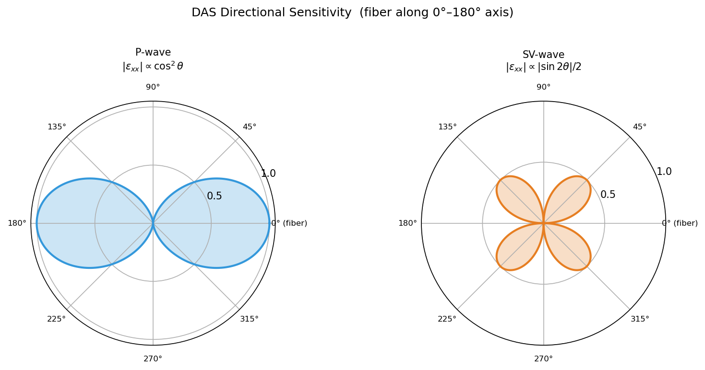
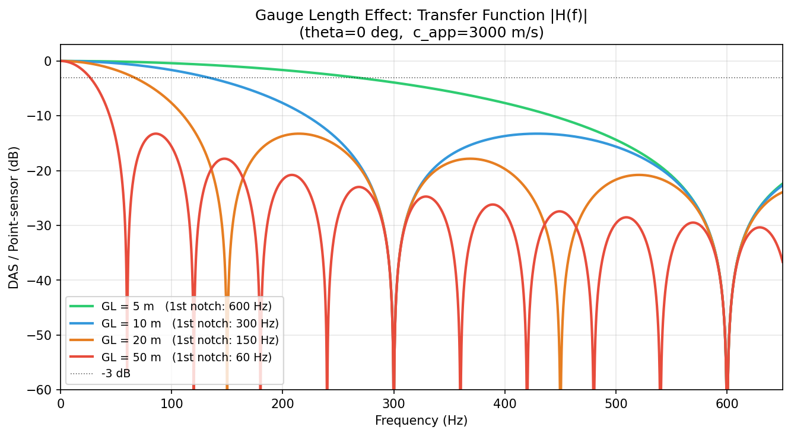
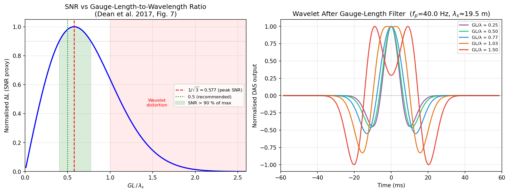
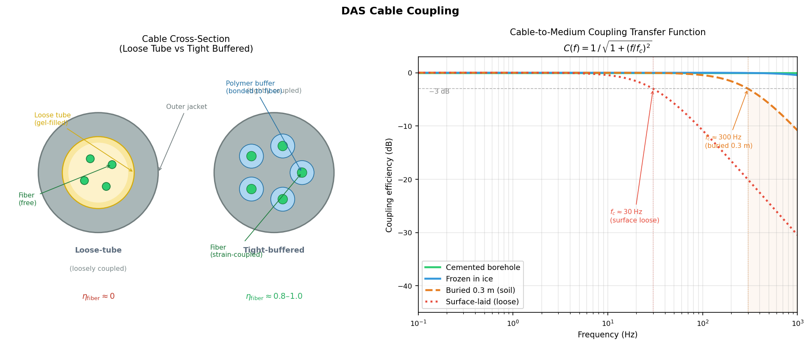

DAS 分布式声学传感¶
引言¶
分布式声学传感（Distributed Acoustic Sensing，DAS）是一种基于光纤的地震传感技术，可将普通通信光缆改造为连续的密集地震台阵。一根长达数十千米的光缆，可同时提供数万个虚拟传感器，道间距低至 1 m，采样率可达数千 Hz。
与传统检波器相比，DAS 具有三大核心优势：
| 特性 | 传统检波器 | DAS |
|---|---|---|
| 部署成本 | 每个传感器单独安装 | 光缆一次性铺设 |
| 空间密度 | 有限台站（tens–hundreds） | 数千至数万虚拟道 |
| 频段下限 | 受自然频率限制（如 4.5 Hz） | 直流至高频均响应（平坦响应） |
| 环境适应 | 需电源、防水处理 | 全光无源，可用海底光缆 |
DAS 测量的物理量是沿光纤轴向的动态应变（dynamic strain）或应变率（strain rate），而非粒子速度，这一根本差异决定了其独特的方向性响应特征与标距效应。
基本原理¶
瑞利散射与相敏 OTDR¶
DAS 的工作原理基于光纤中的瑞利散射（Rayleigh backscattering）和相位光时域反射法（phase-sensitive Optical Time Domain Reflectometry，φ-OTDR）：
- 脉冲注入：仪器向光纤发射一段相干激光脉冲（脉宽决定空间分辨率）
- 瑞利后向散射：光在光纤内沿途与随机折射率不均匀点发生散射，部分散射光沿原路返回
- 相位检测：仪器对返回光进行相干解调，测量不同深度处散射光的相位差
- 相位→应变：相位变化与光纤局部光程长度变化成正比，即与轴向应变成正比
其中 \(n\) 为光纤折射率，\(\lambda\) 为激光波长，\(\Delta L\) 为物理路径长度变化（应变引起）。
DAS 测量的是什么
DAS 测量的是沿光纤轴线方向的动态应变 \(\varepsilon_{xx}\)（或应变率 \(\dot{\varepsilon}_{xx}\)），即光纤轴向的相对拉伸/压缩。对于垂直或水平入射的地震波，其响应强烈依赖于波的传播方向与光纤轴线的夹角。
关键系统参数¶
| 参数 | 典型值 | 说明 |
|---|---|---|
| 道间距（channel spacing） | 1–10 m | 相邻虚拟传感器之间的距离 |
| 标距（gauge length，GL） | 5–50 m | 单道应变积分长度，决定空间分辨率与信噪比 |
| 采样率 | 1–10 kHz | 时间分辨率 |
| 最大电缆长度 | 10–100 km | 受激光功率与损耗限制 |
| 动态范围 | ~80–100 dB | 与激光相干性相关 |
DAS 的典型应用¶
垂直地震剖面（VSP）¶
在油气勘探中，DAS 最早的大规模应用是垂直地震剖面（VSP）。将光缆布设于油井套管外，可同时记录数百米深度范围内的地震波场。
- 优势：无需反复起下钻，节省作业时间；覆盖整口井，分辨率高
- 典型标距：5–10 m
- 信号类型：直达 P/S 波、反射波、转换波
城市浅层地下结构成像¶
将光缆铺设于城市道路下的通信管道（已有光缆），利用车辆振动等环境噪声作为被动震源，反演浅地表 S 波速度结构。
- 代表工作：Lindsey et al. (2017) 利用斯坦福大学园区光缆成像地下结构
- 无需主动震源，成本极低
海底地震观测¶
利用已有海底通信光缆进行地震监测，弥补海洋地震台网的稀疏不足。
- 检测微震、海底滑坡、海啸前兆
- 代表工作：Marra et al. (2018, Science) 用大西洋海底光缆探测地震
微地震与诱发地震监测¶
在地热能、页岩气水力压裂、CO₂封存等工程中，DAS 用于实时监测微地震活动，追踪裂缝发育。
对入射角的方向性响应¶
几何关系¶
设光纤沿 \(x\) 轴方向铺设，地震平面波在 \(x\)-\(z\) 平面内传播，传播方向与光纤轴线（\(x\) 轴）的夹角为 \(\theta\)（以下称入射角）。
波矢量：
沿光纤方向的分量：\(k_x = k\cos\theta\)
DAS 测量的是轴向应变 \(\varepsilon_{xx} = \partial u_x / \partial x\)。
P 波的方向性响应¶
P 波粒子位移沿传播方向，即：
\(x\) 分量：\(u_x = A\cos\theta \cdot e^{i(k_x x + k_z z - \omega t)}\)
轴向应变：
因此：
- \(\theta = 0\)（波平行于光纤传播）：响应最强
- \(\theta = 90°\)（波垂直于光纤传播）：\(\varepsilon_{xx} = 0\)，完全无响应
SV 波的方向性响应¶
SV 波粒子位移垂直于传播方向，在 \(x\)-\(z\) 平面内：
\(x\) 分量：\(u_x = -A\sin\theta \cdot e^{i(\cdots)}\)
轴向应变：
因此：
- \(\theta = 0\) 或 \(\theta = 90°\)：响应为零
- \(\theta = 45°\)：响应最强
SH 波盲区
SH 波的粒子位移垂直于 \(x\)-\(z\) 平面（沿 \(y\) 轴），因此对 \(x\) 方向没有位移分量，DAS 对 SH 波完全不响应（如果光纤在 \(x\)-\(z\) 平面内）。这是 DAS 的固有盲区。
方向性响应的极坐标图¶
以 \(\theta\) 为极角，\(|\varepsilon_{xx}|\) 为极径，P 波响应（\(\cos^2\theta\)）和 SV 波响应（\(|\sin 2\theta|/2\)）的极坐标图见图 1。

图 1：DAS 对 P 波（蓝）和 SV 波（橙）的方向性响应极坐标图。阴影区域面积代表相对响应强度。光纤方向为水平轴。平坦频率响应（Flat Response）¶
应变与粒子速度的关系¶
DAS 测量轴向应变，而地震学中常用的量是粒子速度。两者的转换关系对于理解 DAS 的频率特性至关重要。
对于沿 \(x\) 方向传播的平面 P 波，粒子位移 \(u_x = A e^{i(kx - \omega t)}\)，则：
对于一般入射角 \(\theta\)（与光纤轴的夹角），综合 P 波方向性：
其中 \(v_P\) 是沿传播方向的粒子速度幅度，\(v_x = v_P\cos\theta\)。
整理得：
关键特性：转换系数 \(c_P / \cos^2\theta\) 与频率无关。
为何称为"平坦响应"¶
这一频率无关性使 DAS 具有区别于传统检波器的平坦频率响应（flat response）：
| 仪器类型 | 测量量 | 频率响应 | 低频特性 |
|---|---|---|---|
| 短周期检波器 | 粒子速度 | 平坦（\(f > f_0\)），低频衰减 | 在自然频率 \(f_0\) 以下滚降 |
| 加速度计 | 粒子加速度 | 平坦（\(f < f_\mathrm{res}\)） | 低频端需积分才得速度 |
| DAS（应变） | 轴向应变 | 从直流到 \(f_\mathrm{notch}\) 均平坦 | 无低频截止 |
平坦响应的实际意义
DAS 记录的应变信号，可以在全频段（0 Hz 至标距陷波频率 \(f_\mathrm{notch}\)）用一个与频率无关的常数转换为粒子速度，无需任何频率补偿。这使 DAS 天然适合记录低频地震波（面波、慢地震、潮汐等），而不受传统短周期检波器自然频率的限制。
注意：应变率 ≠ 应变
许多 DAS 系统直接输出应变率 \(\dot{\varepsilon}\)（对时间的导数），而非应变。应变率与粒子速度的关系为 \(\dot{\varepsilon} = -(\cos^2\theta / c_P) \cdot \dot{v}_P\)，即正比于加速度，此时不具有平坦速度响应，需先对时间积分（等效于频域除以 \(\omega\)）还原成应变。
标距效应（Gauge Length Effect）¶
空间积分滤波¶
DAS 并不测量真正意义上的"点"应变，而是测量长度为 \(L\)（标距，gauge length）的光纤段两端之间的相位差，等价于在该段上对应变做空间积分平均：
传递函数推导¶
对于平面波 \(u_x = A e^{i(k_x x - \omega t)}\)，代入上式：
点应变为 \(\varepsilon_\mathrm{point} = ik_x A e^{ik_x x_0} e^{-i\omega t}\)，因此标距传递函数为：
其中 \(\mathrm{sinc}(x) = \sin(\pi x) / (\pi x)\)。
用频率表示（代入 \(k_x = 2\pi f \cos\theta / c\)）：
陷波频率¶
sinc 函数在 \(k_x L/2 = n\pi\)（\(n = 1, 2, 3, \ldots\)）处为零，对应的陷波频率：
其中 \(c_\mathrm{app} = c/\cos\theta\) 是沿光纤方向的视速度（apparent velocity）。
物理解释
当地震波的沿纤视波长 \(\lambda_\mathrm{app} = c_\mathrm{app}/f\) 等于标距 \(L\) 时（即 \(f = c_\mathrm{app}/L\)），标距两端的位移大小相等、方向相反，相减后精确为零，出现第一陷波。
标距与陷波频率的权衡¶
| 标距 \(L\) | 陷波频率 \(f_1\)（\(c\) = 3000 m/s，\(\theta\) = 0°） | 信噪比 |
|---|---|---|
| 5 m | 600 Hz | 低（积分路径短） |
| 10 m | 300 Hz | 中 |
| 20 m | 150 Hz | 较高 |
| 50 m | 60 Hz | 高，但高频损失严重 |
标距选取的关键性
标距 \(L\) 过大：陷波频率降低，损失高频信息；\(L\) 过小：每道平均的应变段短，信噪比下降。实际中根据目标信号频段和地面/井下条件选取，通常 \(L = 5\)–\(20\) m。
角度效应：入射角 \(\theta\) 越大（波越接近垂直于光纤），\(k_x\) 越小，陷波频率越高，高频信息保留越好，但振幅响应（\(\cos^2\theta\) 因子）也越弱。

图 2：不同标距下 DAS 的传递函数（\(|H(f)|\)）随频率的变化（\(\theta = 0°\)，\(c\) = 3000 m/s）。标距越大，陷波频率越低。最优标距：信噪比与分辨率的权衡¶
以上分析表明标距存在两种相互对立的效应：标距过小 → 信噪比差；标距过大 → 分辨率下降、波形畸变。Dean, Cuny & Hartog（2016）针对轴向入射 P 波（\(\theta = 0°\)，VSP 典型场景）给出了定量分析。
信噪比分析¶
对于沿光纤轴向传播的 P 波，应变波形为Ricker 子波（时域）：
其空间域形式（波数 \(k = \pi f_p / v\)）：
DAS 测量的光纤长度变化 \(\Delta L\)（即信号强度）为应变在标距上的积分：
公式推导
利用 \(\frac{\mathrm{d}}{\mathrm{d}x}\!\left[x\,e^{-\pi^2 k^2 x^2}\right] = \varepsilon(x)\)，可解析积分得到上式。
\(\Delta L\) 关于 \(L\) 的极值：令 \(\mathrm{d}(\Delta L)/\mathrm{d}L = 0\)，解得：
其中空间波长 \(\lambda_s = v\lambda_t = v\sqrt{6}/(\pi f_p)\)。
DAS 的相位测量误差 \(E(\Delta L)\) 与标距无关（由激光相干性决定），因此 SNR ∝ \(\Delta L\)，在 \(L = \lambda_s/\sqrt{3}\) 时取得最大值。
分辨率分析（波形畸变）¶
标距的积分等效于一个箱型（移动平均）低通滤波器，其频率响应即为 sinc 函数。随着 \(L\) 增大，陷波频率向低频移动，逐步侵入子波的主频带：
| GL/\(\lambda_s\) 比值 | 波形状态 | SNR |
|---|---|---|
| \(< 0.40\) | 正常，高分辨率 | 低（信号弱） |
| \(0.40\)–\(0.54\) | 最优区间：高 SNR + 良好分辨率 | > 90 % 最大值 |
| \(\approx 0.577\) | SNR 峰值；子波轻微展宽 | 最大 |
| \(\approx 1.0\) | 陷波进入主频带，子波顶部变平（flat-topped） | 较高但分辨率差 |
| \(> 1.0\) | 子波出现双峰畸变（double-lobed），严重失真 | 应避免 |
最优标距公式¶
综合 SNR > 90% 最大值与分辨率误差 < 15% 两个约束，最优比值范围为 \(GL/\lambda_s \approx 0.40\)–\(0.54\)，推荐取 0.5，由此得到最优标距（Dean et al. 2016，公式 18）：
实际计算示例
VSP 中某深度段视速度 \(v = 3000\) m/s，子波主频 \(f_p = 50\) Hz： $\(L_\mathrm{opt} \approx \frac{0.5 \times 3000}{50} = 30\text{ m}, \quad \lambda_s \approx \frac{3000\sqrt{6}}{\pi \times 50} \approx 46.8\text{ m}\)$ 若视速度在全井范围内从 2900 m/s 变化到 5900 m/s（变化近 2 倍），建议对不同深度段分别选取最优标距，以保证 SNR 和分辨率在全深度范围内均处于最优状态。
标距下限的物理约束
当 \(L\) 减小到接近激光脉冲宽度时（通常 \(L < 8\) m），相位与应变的关系变为非线性，DAS 系统的基本假设失效。因此，尽管理论上更小的 \(L\) 给出更好的分辨率，实际中 \(L_\mathrm{min} \approx 8\) m 是硬性下限。

图 3：左图——归一化 \(\Delta L\)（SNR 代理）随 \(GL/\lambda_s\) 的变化，绿色区域为 SNR > 90% 最大值的区间，红色阴影区为波形畸变区；右图——不同 \(GL/\lambda_s\) 比值下 DAS 输出的归一化子波形状（\(f_p\) = 40 Hz，\(v\) = 1000 m/s，\(\lambda_s \approx 19.5\) m）。（基于 Dean et al. 2016）综合仪器响应模型¶
实际地震学应用中，DAS 记录到的位移谱是震源谱、路径衰减、场地响应、仪器响应四者的乘积。将前文各效应（方向性 \(\cos^2\theta\)、标距 sinc 滤波、κ 衰减、t* 路径衰减）整合后，P 波 DAS 位移谱的完整前向模型为（Bakku 2015；Chang et al. 2026）：
| 因子 | 公式 | 物理含义 |
|---|---|---|
| \((2\pi f)^m\) | \(m=0,1,2\) 分别对应位移、速度、加速度（应变率） | DAS 输出的积分阶次 |
| \(\Omega_0\) | 低频平台 | 震源谱（地震矩） |
| \(e^{-\pi f\kappa}\) | \(\kappa = \int_\text{path} dt/Q_s\) | 近地表积分 kappa 衰减 |
| \(v\cos^2\theta\) | 角度响应 | P 波对光纤轴的方向性灵敏度 |
| \(\mathrm{sinc}(\pi fL / v\cos\theta)\) | 标距传递函数 | 空间积分低通滤波 |
| \(e^{-\pi f t^*}\) | \(t^* = \int_\text{path} dt/Q\) | 路径非弹性衰减 |
S 波对应：用 \(v\cos\theta\sin\theta\) 替换 \(v\cos^2\theta\)，sinc 参数中 \(\cos\theta\) 保持不变。
深度微分项
在井中 DAS 的逐道分析中，两相邻道之间的时间差（用于谱比法）为： $\(\mathrm{d}t_m = \frac{\mathrm{d}z}{v\cos\theta}\)$ 其中 \(\mathrm{d}z\) 是道间深度差。这一项将深度差转化为传播时间差，也是入射角的函数。
入射角对仪器响应校正的影响¶
使用 DAS 进行震源参数反演或 Q 值反演时，需要先从观测谱中去除仪器响应，即除以 \(v\cos^2\theta \cdot \mathrm{sinc}(\cdots)\)。这一校正在入射角较大时会引入严重误差：
| 影响因素 | 小角度 \(\theta \ll 45°\) | 大角度 \(\theta \to 90°\) |
|---|---|---|
| 平坦响应校正系数 \(1/\cos^2\theta\) | 接近 1，稳定 | 趋于 \(\infty\)，放大噪声 |
| sinc 陷波频率 \(v\cos\theta/L\) | 接近 \(v/L\)，高频段保留好 | 向低频移动，有效带宽收窄 |
| 灵敏度 \(v\cos^2\theta\) | 接近 \(v\)，信噪比高 | 趋于 0，信噪比极低 |
实践中的入射角阈值：Chang et al.（2026）在使用垂直井 DAS 反演浅层 Q 和微地震源参数时，将入射角限制为：
超过此阈值的台道（channel）在谱拟合时被排除，以防止响应校正误差主导结果。
垂直井的几何约束
对于深度为 \(z_\text{ch}\) 的台道和位于震源 \((r_H,\, z_\text{src})\) 的事件（\(r_H\) 为水平距离，\(z_\text{src} > z_\text{ch}\) 即事件在台道下方），入射角为： $\(\theta = \arctan\!\left(\frac{r_H}{z_\text{src} - z_\text{ch}}\right)\)$ \(\theta < 45°\) 要求 \(r_H < z_\text{src} - z_\text{ch}\)，即事件的水平距离小于事件与台道的垂直距离差。因此谱比法 Q 反演优先使用井底正下方的事件。
光缆耦合¶
DAS 记录到的轴向应变信号，必须经历两个串联的机械传递环节才能真正反映地层运动：
两个系数均小于 1，且各自有独立的频率响应和工程控制手段。
光缆外套到光纤的耦合¶
光缆机械结构与应变传递效率¶
光纤外封装结构决定了外套应变能否传递到光纤，是 DAS 最基本的硬件约束。
松套管结构（Loose-tube cable）
光纤悬浮在充满油膏（filling compound）的松套管内，管内光纤比管稍长（余量系数 0.1–0.5%）。
- 径向和轴向均无机械约束 → 动态应变传递效率 \(\eta_\text{fiber} \approx 0\)
- 专为通信设计：防止温度变化产生的热应力传递到光纤，保护传输性能
- 不适合 DAS 地震传感——使用松套管电缆进行 DAS 测量时，记录到的是近乎纯噪声
紧套管结构（Tight-buffered cable）
聚合物缓冲层（典型厚度 0.9 mm）直接热挤压到光纤包层（cladding）上，形成刚性键合。
准静态下 \(\eta \to 1\)；在高频段，由于缓冲层的黏弹性滞后（viscoelastic lag），\(\eta\) 略有下降。
应变传感专用光缆（Strain-sensing cable）
为 DAS/分布式应变传感（DSS）优化设计，通常采用以下一种或几种结构： - 增强紧套管：更高刚度的缓冲聚合物，\(\eta \approx 0.9\)–\(1.0\) - 绞合型加强件（helically wound steel wires）：将应变均匀分配到光纤，兼顾保护与传感 - 直接粘接（direct bonding）：光纤用环氧树脂直接固定于金属护套内壁，应变传递最优
| 光缆类型 | 典型 \(\eta_\text{fiber}\) | 地震 DAS 适用性 | 典型用途 |
|---|---|---|---|
| 松套管（Loose-tube） | ≈ 0 | ❌ 不适用 | 长距离通信、海底光缆 |
| 紧套管（Tight-buffered） | 0.7–0.9 | ✓ 适用 | 室内布线、短距离传感 |
| 应变传感专用缆 | 0.9–1.0 | ✓ 最优 | DAS、DSS 传感专用 |
| 铠装光缆（Armored） | 0.5–0.8† | △ 视结构而定 | 井下/恶劣环境 |
†铠装钢丝若与内部松套管组合，则外层铠甲感知应变而内部光纤不感知，η 取决于松/紧套内芯。
通信光缆复用的陷阱
城市 DAS 研究中常将现有通信光缆直接用于地震传感。多数城市通信光缆为松套管结构，尽管 DAS 询问器可正常工作，但所有通道的应变信号极弱，信噪比极低。仅当光缆包含紧套管芯（tight-buffered core）时，相应通道方可用于地震传感。在选缆前须向运营商索取光缆截面结构说明书（cable datasheet）。
频率域的套-芯耦合模型¶
对于紧套管结构，缓冲层的黏弹性剪切刚度决定了频率相关的应变传递率。考虑一段长度为 \(l\)、内外径分别为 \(r_f\)（光纤）和 \(r_b\)（缓冲外径）的缓冲层，其轴向剪切传递导纳（Kuvshinov 2016）：
其中 \(k_b = G_b / \ln(r_b/r_f)\) 为缓冲层剪切刚度，\(\tau_b\) 为缓冲材料的黏弹性松弛时间（通常 \(\tau_b \sim 10^{-4}\)–\(10^{-3}\) s），\(k_f = E_f \pi r_f^2\) 为光纤轴向刚度。
在地震频段（1–1000 Hz），对于典型紧套缓冲材料（聚酰亚胺/ETFE，\(G_b \sim 0.5\)–\(2\) GPa），高频截止频率 \(f_\text{cut} = k_b/(2\pi m_f)\) 通常在数 kHz 以上，远高于地震信号频带，因此实践中可将 \(\eta_\text{fiber}\) 近似为常数。
光缆与介质的耦合¶
物理机制¶
光缆铺设于地层后，地震波传播产生的自由场应变 \(\varepsilon_g(f)\) 必须通过光缆与周围介质之间的界面传入光缆外套。这一传递由界面剪切刚度 \(k_s\)（单位长度，N/m²）决定：
- \(k_s \to \infty\)（完全固结）：\(C_\text{med}(f) = 1\)，完美耦合
- \(k_s = 0\)（自由滑动）：\(C_\text{med}(f) = 0\)，零耦合
对于有限 \(k_s\)，耦合系统等效为分布式弹簧-质量模型（distributed spring-mass），其传递函数近似为一阶低通（Martin et al. 2021）：
截止频率：
其中 \(m_c\) 为光缆单位长度质量（kg/m）。当 \(f \gg f_c\) 时，光缆惯性阻止其跟随地层运动，耦合效率以 \(-20\) dB/decade 下降。
四类部署场景¶
（1）灌浆固化井孔（cemented borehole）
光缆置于套管外或裸眼孔中，用水泥浆（或快干环氧树脂）灌注固化。
剪切刚度近似为（Kuvshinov 2016）：
其中 \(G_g \sim 5\)–\(20\) GPa 为水泥浆剪切模量，\(r_\text{bh}\) 为孔径，\(r_c\) 为光缆半径。典型结果 \(f_c \gg 1000\) Hz，在所有地震频段内视为完美耦合。
（2）冻结于冰中（frozen-in ice / permafrost）
热钻孔后插入光缆，待孔隙水重新冻结（数小时至数天）。冰的剪切模量 \(G_\text{ice} \approx 3.5\) GPa。耦合效率与灌浆固化接近，估计 \(f_c \sim 1000\text{–}3000\) Hz，实际地震频段完全耦合。冻融循环会破坏固化，需重新评估。
（3）浅埋于土壤（buried in soil）
在疏松土壤中，有效剪切刚度：
\(G_s\) 为土体剪切模量（软土 5–50 MPa，硬土 50–500 MPa），\(D_\infty \approx 10 r_c\) 为影响半径。截止频率随埋深和土体刚度变化：
| 土体类型 | \(G_s\) | 埋深 0.1 m | 埋深 0.3 m | 埋深 1.0 m |
|---|---|---|---|---|
| 软黏土 | 5 MPa | ~30 Hz | ~80 Hz | ~200 Hz |
| 砂土 | 50 MPa | ~120 Hz | ~300 Hz | ~800 Hz |
| 硬土/风化岩 | 200 MPa | ~400 Hz | ~1000 Hz | > 2000 Hz |
实践建议：埋深 ≥ 0.3 m 可保证 100 Hz 以下地震信号的有效耦合（\(C > -1\) dB）。
（4）裸铺于地面（surface-laid cable）
光缆仅靠自重摩擦与地面接触，有效 \(k_s\) 取决于光缆重量和地面粗糙度，通常极低（等效摩擦刚度 \(k_s \sim 10^3\)–\(10^4\) N/m²）。\(f_c\) 低至 20–100 Hz，高频信号严重衰减。
裸铺光缆用于 DAS 的局限
海底通信光缆通常裸铺于海床（铺设船直接放缆），其耦合效率受到双重限制：内部松套管结构（\(\eta_\text{fiber} \approx 0\)）与表面摩擦耦合（\(f_c \sim 50\) Hz）叠加，实际可用频带通常 < 20 Hz，且信号振幅远低于标准地震仪。尽管如此，借助超长光缆（数千公里）与超低频信号（地震面波），海缆 DAS 依然在全球地震监测中取得了重要成果（Marra et al. 2018）。

图 4：（左）松套管与紧套管光缆截面对比——松套管中光纤自由漂浮于油膏中（\(\eta_\text{fiber} \approx 0\)），紧套管中聚合物缓冲层直接键合于光纤（\(\eta_\text{fiber} \approx 0.8\)–\(1.0\)）。（右）四种部署场景的介质–光缆耦合传递函数 \(C_\text{med}(f) = [1+(f/f_c)^2]^{-1/2}\)：灌浆固化井孔（\(f_c \to \infty\)，绿色实线）和冻结耦合（\(f_c \approx 3000\) Hz）在地震频段完全透明；埋深 0.3 m（\(f_c \approx 300\) Hz，橙色虚线）在 1 kHz 以下可靠；裸铺地面（\(f_c \approx 30\) Hz，红色点线）在 100 Hz 以上已严重衰减。修正后的综合仪器响应¶
引入两个耦合系数后，DAS P 波记录谱的完整前向模型扩展为：
各耦合因子对应不同的物理环节，可独立评估与校正：
| 因子 | 控制手段 | 残余不确定性 |
|---|---|---|
| \(C_\text{med}(f)\) | 灌浆固化 / 埋深 | 孔隙率、泥浆固化质量 |
| \(\eta_\text{fiber}\) | 选用紧套管 / 传感专用缆 | 缓冲层老化、温度 |
| \(v\cos^2\theta\) | 入射角约束（\(\theta < 45°\)） | 速度模型误差 |
| \(\mathrm{sinc}(\cdots)\) | 标距选择 | 见标距效应章节 |
反演前的耦合校正顺序
- 先确认光缆类型（紧/松套），筛除 \(\eta_\text{fiber} \approx 0\) 的通道
- 评估部署状态，估计 \(f_c\)，确定可用频带上限
- 若需要宽频带反演，将 \(C_\text{med}(f)\) 的倒数补偿到数据谱上（注意避免在截止频率以上过度放大噪声）
- 再进行标距、方向性、\(t^*\) 等的联合反演
耦合质量的现场评估¶
直接评估耦合效率的方法：将 DAS 与同位置点式地震仪（宽频或检波器）的记录进行比较，计算经验传递函数：
期望值为 \(T(f) \propto (i2\pi f)^m \cdot C_\text{med}(f) \cdot \eta_\text{fiber} \cdot v\cos^2\theta\)（在校正方向性和标距后）。若 \(|T(f)|\) 在某频段以 \(-20\) dB/decade 衰减，可直接读取 \(f_c\)，进而估算耦合刚度 \(k_s\)。
Python 示例¶
下面的代码生成上文中的两幅图：方向性响应极坐标图与标距效应传递函数图。
import numpy as np
import matplotlib.pyplot as plt
# ── 图 1：方向性响应极坐标图 ───────────────────────────────
theta = np.linspace(0, 2 * np.pi, 720)
# P 波：cos²θ（双极瓣）
resp_P = np.cos(theta) ** 2
# SV 波：|sin(2θ)|/2（四极瓣）
resp_SV = np.abs(np.sin(2 * theta)) / 2
fig, axes = plt.subplots(1, 2, figsize=(11, 5),
subplot_kw=dict(projection='polar'))
for ax, resp, color, label, desc in [
(axes[0], resp_P, '#3498db', r'P-wave $|\cos^2\theta|$',
'P-wave sensitivity\n' + r'$|\varepsilon_{xx}| \propto \cos^2\theta$'),
(axes[1], resp_SV, '#e67e22', r'SV-wave $|\sin 2\theta|/2$',
'SV-wave sensitivity\n' + r'$|\varepsilon_{xx}| \propto |\sin 2\theta|/2$'),
]:
ax.plot(theta, resp, color=color, lw=2)
ax.fill(theta, resp, alpha=0.25, color=color)
ax.set_theta_zero_location('E')
ax.set_theta_direction(1)
ax.set_xticks(np.deg2rad([0, 45, 90, 135, 180, 225, 270, 315]))
ax.set_xticklabels(['0° (fiber)', '45°', '90°', '135°',
'180°', '225°', '270°', '315°'], fontsize=8)
ax.set_yticks([0.5, 1.0])
ax.set_yticklabels(['0.5', '1.0'], fontsize=8)
ax.set_title(desc, pad=14, fontsize=10)
plt.suptitle('DAS Directional Sensitivity (Fiber along 0°–180°)', y=1.02, fontsize=12)
plt.tight_layout()
plt.savefig('docs/assets/images/das_angle_response.png',
dpi=150, bbox_inches='tight')
print('Saved das_angle_response.png')
# ── 图 2：标距效应传递函数 ─────────────────────────────────
c = 3000.0 # apparent velocity (m/s), θ = 0 → c_app = c
GLs = [5, 10, 20, 50]
colors = ['#2ecc71', '#3498db', '#e67e22', '#e74c3c']
f = np.linspace(0.1, 600, 2000)
fig, ax = plt.subplots(figsize=(9, 5))
for L, color in zip(GLs, colors):
kxL_half = np.pi * f * L / c # k_x * L/2 (θ=0 → k_x = 2πf/c)
H = np.abs(np.sinc(kxL_half / np.pi)) # sinc(k_x L / 2π) = sin(k_x L/2)/(k_x L/2)
ax.plot(f, 20 * np.log10(np.clip(H, 1e-6, None)),
color=color, lw=2, label=f'GL = {L} m (notch: {c/L:.0f} Hz)')
ax.axhline(-3, color='k', lw=0.8, ls=':', alpha=0.6, label='−3 dB')
ax.set(xlabel='Frequency (Hz)',
ylabel='DAS / Point-sensor response (dB)',
title='Gauge Length Effect: Transfer Function $|H(f)|$\n'
r'($\theta = 0°$, $c_{\rm app}$ = 3000 m/s)',
xlim=[0, 600], ylim=[-60, 3])
ax.legend(fontsize=9)
ax.grid(True, alpha=0.3)
plt.tight_layout()
plt.savefig('docs/assets/images/das_gauge_length.png',
dpi=150, bbox_inches='tight')
print('Saved das_gauge_length.png')
# ── 图 3：最优标距——SNR 曲线与子波畸变（Dean et al. 2016）────
fp, v = 40.0, 1000.0
k_r = np.pi * fp / v
lambda_s = np.sqrt(6) / k_r # 空间波长 ≈ 19.5 m
T_half = 3 * lambda_s / v
dt = lambda_s / v / 200
t = np.arange(-T_half, T_half + dt, dt)
eps = (1 - 2*(np.pi*fp*t)**2) * np.exp(-(np.pi*fp*t)**2)
GL_ratios = np.linspace(0.01, 2.6, 1000)
DL = GL_ratios * lambda_s * np.exp(-(k_r * GL_ratios*lambda_s/2)**2) # 无额外 π
DL_norm = DL / DL.max()
fig, axes = plt.subplots(1, 2, figsize=(13, 5))
ax = axes[0]
ax.plot(GL_ratios, DL_norm, 'b-', lw=2)
ax.axvline(1/np.sqrt(3), color='r', lw=1.5, ls='--',
label=r'$1/\sqrt{3}\approx0.577$ (peak SNR)')
ax.axvline(0.5, color='g', lw=1.5, ls=':',
label='0.5 (recommended)')
ax.axhline(0.90, color='gray', lw=1, ls=':', alpha=0.6)
ax.fill_between(GL_ratios, DL_norm, where=(DL_norm >= 0.90),
alpha=0.15, color='green', label='SNR > 90 % of max')
ax.axvspan(1.0, 2.6, alpha=0.08, color='red')
ax.text(1.55, 0.45, 'Wavelet\ndistortion', color='red', fontsize=8, ha='center')
ax.set(xlabel=r'$GL\,/\,\lambda_s$', ylabel=r'Norm. $\Delta L$ (SNR proxy)',
title='SNR vs GL/Wavelength Ratio (Dean et al. 2016)',
xlim=[0, 2.6], ylim=[0, 1.05])
ax.legend(fontsize=8)
ax.grid(True, alpha=0.3)
ax = axes[1]
palette2 = ['#9b59b6','#2ecc71','#3498db','#e67e22','#e74c3c']
for r, color in zip([0.25, 0.50, 0.77, 1.03, 1.50], palette2):
n_box = max(1, int(round(r * lambda_s / v / dt)))
box = np.ones(n_box) / n_box
out = np.convolve(eps, box, mode='same')
out /= (np.abs(out).max() + 1e-30)
ax.plot(t*1e3, out, color=color, lw=1.8, label=f'GL/λ = {r:.2f}')
ax.axhline(0, color='k', lw=0.6, ls='--', alpha=0.4)
ax.set(xlabel='Time (ms)', ylabel='Normalised DAS output',
title=fr'Wavelet After Gauge-Length Filter ($f_p$={fp} Hz, $\lambda_s$≈{lambda_s:.1f} m)',
xlim=[-60, 60])
ax.legend(fontsize=8)
ax.grid(True, alpha=0.3)
plt.tight_layout()
plt.savefig('docs/assets/images/das_gauge_opt.png', dpi=150, bbox_inches='tight')
print('Saved das_gauge_opt.png')
plt.show()
参考文献¶
- Lindsey, N. J., Martin, E. R., Dreger, D. S., Freifeld, B., White, S., Monga, S. K., … & Ajo-Franklin, J. B. (2017). Fiber-optic network observations of earthquake wavefields. Geophysical Research Letters, 44(23), 11–792.
- Mateeva, A., Lopez, J., Potters, H., Mestayer, J., Cox, B., Kiyashchenko, D., … & Berlang, W. (2014). Distributed acoustic sensing for reservoir monitoring with vertical seismic profiling. Geophysical Prospecting, 62(4), 679–692.
- Marra, G., Clivati, C., Luckett, R., Tampellini, A., Kronjäger, J., Wright, L., … & Margolis, H. S. (2018). Ultrastable laser interferometry for earthquake detection with terrestrial and submarine cables. Science, 361(6401), 486–490.
- Wang, H. F., Zeng, X., Miller, D. E., Fratta, D., Feigl, K. L., Thurber, C. H., & Mellors, R. J. (2018). Ground motion response to an ML 4.3 earthquake using co-located distributed acoustic sensing and seismometers. Geophysical Journal International, 213(3), 2020–2036.
- Daley, T. M., Miller, D. E., Dodds, K., Cook, P., & Freifeld, B. M. (2016). Field testing of modular borehole monitoring with simultaneous distributed acoustic sensing and geophone vertical seismic profiles at Citronelle, Alabama. Geophysical Prospecting, 64(5), 1318–1334.
- Zhan, Z. (2020). Distributed acoustic sensing turns fiber-optic cables into seismic stations. Bulletin of the Seismological Society of America, 110(3), 975–985.
- Dean, T., Cuny, T., & Hartog, A. H. (2017). The effect of gauge length on axially incident P-waves measured using fibre optic distributed vibration sensing. Geophysical Prospecting, 65(1), 184–193. https://doi.org/10.1111/1365-2478.12419
- Bakku, S. K. (2015). Fracture characterization from seismic measurements in a borehole (Doctoral dissertation, Massachusetts Institute of Technology).
- Chang, H., Nakata, N., Abercrombie, R. E., Dadi, S., & Titov, A. (2026, in review). Using borehole Distributed Acoustic Sensing to investigate microearthquake source parameter variability in an enhanced geothermal system. ESSOAr preprint. https://doi.org/10.22541/essoar.15002292/v1